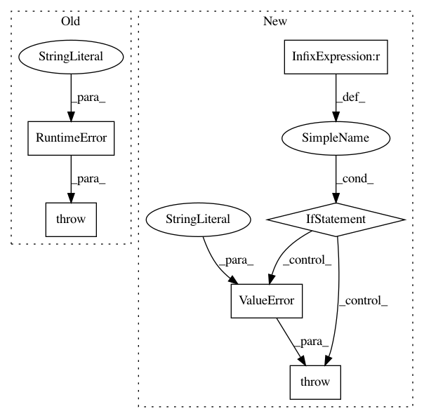

6d7069d9a13c2e15b7c7fd67a092cf9738f00347,bokeh/embed.py,,autoload_static,#Any#Any#Any#,347
Before Change
ValueError
"""
raise RuntimeError("TODO autoload_static needs to be ported to tornado")
if resources.mode == "inline":
raise ValueError("autoload_static() requires non-inline resources")
if resources.dev:
After Change
raise ValueError("autoload_static() only works with non-dev resources")
plot_objects = _check_plot_objects(plot_object)
if len(plot_objects) != 1:
raise ValueError("Specify exactly one plot object for autoload_static")
(docs_json, render_items) = _standalone_docs_json_and_render_items(plot_objects)
item = render_items[0]
model_id = ""
In pattern: SUPERPATTERN
Frequency: 3
Non-data size: 6
Instances
Project Name: bokeh/bokeh
Commit Name: 6d7069d9a13c2e15b7c7fd67a092cf9738f00347
Time: 2015-10-23
Author: hp@pobox.com
File Name: bokeh/embed.py
Class Name:
Method Name: autoload_static
Project Name: scipy/scipy
Commit Name: 0e22219cfa3b5b8c4af77a452812f03cc3a13a06
Time: 2015-07-28
Author: n59_ru@hotmail.com
File Name: scipy/optimize/least_squares.py
Class Name:
Method Name: least_squares
Project Name: cornellius-gp/gpytorch
Commit Name: 2185f24dda7b33194d4240b2a6301230ce1cd7f5
Time: 2019-04-02
Author: jake.gardner@uber.com
File Name: gpytorch/likelihoods/multitask_gaussian_likelihood.py
Class Name: MultitaskGaussianLikelihoodKronecker
Method Name: __init__